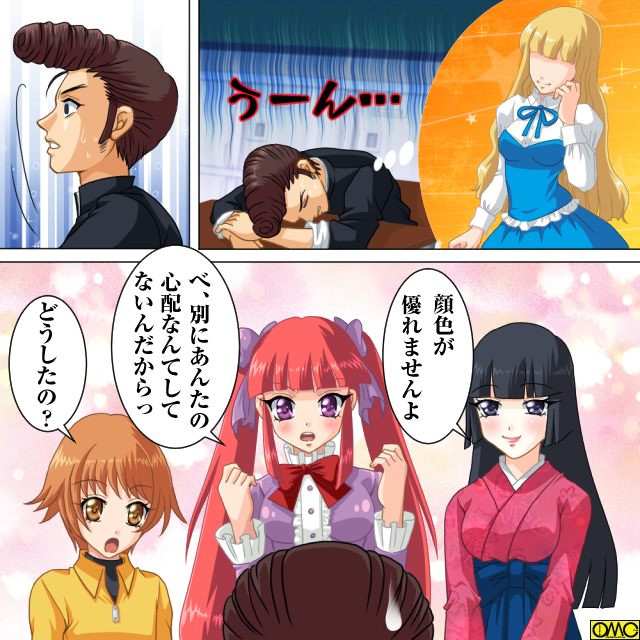
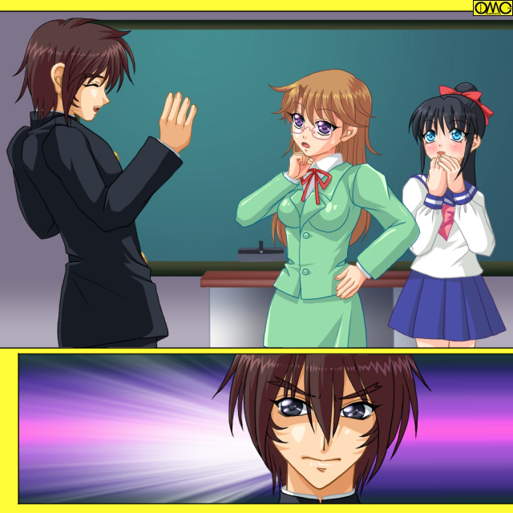

雪の降る日。彼のヒーローが現れた。
男が命の次に大事にしているであろうガクランをぼろぼろにして自分を助けてくれた男。
「ま、待ってくれよ」
その「男の子」はあわてて車から駆け下りて雪道を走って『彼のヒーロー』を追いかける。
いつの間にか男の子は背の高い『不良』の姿に。
そして似たような姿の男に追いついた。後ろから抱きつく。
「やっと逢えたな。オレはあんたに憧れてこの学校に進学したくらいなんだ」
胸の内を吐露する秋津明義。だが彼は違和感を感じた。
「……あんた、随分といい匂いがするな？」
この甘い香り。まるでこれは…
「それに…なんだかやたら柔らかいし」
抱きしめた感触は筋肉のヨロイではなく、まさにマシュマロのような柔らかさ。
嫌な汗が出る。冷や汗。脂汗が混じったような。
「…………」
男にはありえない感触に彼はますますひどい汗をかく。
「女の子は柔らかくていい匂いがするものなのよ。秋津クン」
鈴を転がすようなきれいな「女の声」がする。この場合その耳の心地よさが秋津にとっては悪夢だった。
いつの間にか「大原修」が「大原乙女」になっていた。
「うわあああああああっ。て、てめえっ。いつの間にすりかわった？」
「私は生まれ変わったのよ。そして秋津クン。あなたもね」
「えっ？」
秋津は頭ひとつは上のはずなのに気がつくと乙女と視線が同じ高さに来ていた。
ずしっと胸が重くなる。胸が膨らんだのにくわえ、非力になったのが何故か実感できる。
髪の毛が爆発的に伸びふわふわの印象を。
手足は華奢になり肌の色は輝く白に。
衣類も白とピンクのワンピースに。フリルだらけで乙女チック。
「ああああああ。男の中の男になるはずのオレが」
スカートの上から股間をまさぐるがまったいら。
反対に胸元はやたらに盛り上がり腕の邪魔。
服だけでなく肉体も少女になっていることを突きつけていた。
「あなたは私に憧れていたんでしょ？ そして追いかけていたとも。だから私と同じになるの」
「いや……なんかじゃないですっ。乙女先生」
不良学生の面影はまったくない。そこにいるのはうら若き少女。
むしろ姫と言いたくなる高貴さをもっていた。
「先生。ありがとうございます。私も先生と同じ女になれて嬉しいです」
（な、口が勝手に。オレがこんな女になるはずが）
まだ心では男の心が抵抗を続けていた。
「とても可愛いわ。あなたにも女の子の名前をつけてあげましょう」
「嬉しいですわ。先生（やめろ。女の名前なんてつけられたら心まで女になってしまう気がする）」
その思いに反して乙女は即決で女の子の秋津の名前を決めた。
「愛の夢で愛夢（あいむ）ちゃん。ううん。ちゃん付けより愛夢姫とでもよびたいわ」
「まぁ。素敵なお名前。はい。わたくし必ず立派な姫になりますわ」
（違う。女になんてなりたくないのに。どうしてオレがこんな目に！？）
入れ替わって心の奥底に押し込められた秋津明義の絶叫は誰にも聞こえない。
ただひたすら優しい微笑をかわす二人の女がいるだけだ。
教育と更生を求めて学校を渡り歩く一人の女。
不良達のつけた「ゴッドファーザー」の二つ名を名乗る爽快な女。その名は……
ゴッドファーザー乙女
Ｌｅｓｓｏｎ３「ハンター・ミッション」
「うわああああああっ」
一月末のある日。秋津は教室の机で跳ね起きた。教室の中にいるもの達が一斉に注目するがすぐに興味を失う男と深入りする女。対照的であった。
現在は昼休み。校庭で遊んだりせず教室の机で居眠りしていたのだがこの有様。
「ゆ、夢か。なんつーシャレにならない夢を」
脂汗は本当だった。
「どうしたの？ 秋津のお兄ちゃん」
小学生の女児。江原エリが下から覗き込む様にみていた。
「顔色が優れませんよ」
和服姿の福本文乃がおっとりと言う。
「べ、別にあんたの心配なんてしてないんだからねっ」
パステルカラーだらけで目が痛くなるのが堂島だりあ。
ピンクのツインテールがアニメキャラじみている。
そのせいなのか「ツンデレ」を演じているようだ。
いずれも元は不良男子だったが乙女によって現在の姿になっている。

このイラストはＯＭＣによって作成されました。
クリエイターの高天リオナさんに感謝！
「なんでもねーよ。あっちにいけ」
元・男と言うこともあり邪険に扱う。
「あー。ひっどーい。女の子に対してそんな言い方」
だりあのつきぬける甲高い声が秋津の脳天を直撃する。
「お兄ちゃん…私が何かしたなら謝るから。だから怒らないで」
半べその小学生女児に上目遣いで謝られたらいくら不良ても心は痛む。
「まぁ。御機嫌斜めですのね」
そしてやや場違いな大正娘。あまりの不ぞろいさもあり秋津はきれた。
「いいから消えやがれ。オカマどもっ」
「ふーんだ。言われなくても消えるもん。ねぇみんな。聞いて。秋津がひどいんだよ」
「えー。なになに？」
「だりあに何かしたの？」
だりあがアピールした先には７人もの女子が。その『ひどい現実』を再認識して秋津はげんなりとする。
（あれから５人がさらに変えられたしなぁ。そりゃあんな夢も見るか）
２０人の爪弾き者で構成されたＺ組。不良クラスと言われていたのはもはや昔。
男子校の中でクラス半分の十名が女子で「共学クラス」と言われる始末。
（キレイ過ぎて居心地悪いぜ……）
言葉どおりだった。
元・不良の少女達は「理想の姿」のせいかとにかく女性的であった。
そして女性に抱くイメージのひとつ…「清潔さ」が教室に反映されていた。
汚かった教室がすっかりきれいに、そして明るくなった。
常に花瓶には花がいけてある。
そもそも「女の子がいる」それだけで場が明るくなる。
例え元は男達でもだ。
「しっかし…あいつらがみんな元は男とは信じられないぜ」
教室の隅っこでライオンのたてがみのようなぼさぼさ頭の財津全次郎がつぶやく。
「これもみんなあのオカマが悪いんだ」
歯噛みするのは秋津明義。二人は女子の一団を眺めていた。
「後楽高校に王真。百紀。とうとう作者の分じゃ足りなくて『ロボＴＲＹ』での制服まであるぜ」
そのせつはお世話になりました。
「しかもしょーもないことばかりで変身してやがる。権藤の奴はあのオカマがレディースディで映画を見ているのを『女は安くついていいな』とからかったら女子高生になったし」
「権藤源太郎が銀河のアイドルになれと権藤銀河と改名だしな」
「変身した時も変なこと叫んでいたよな。『宇宙キターッ』とか」
銀河と言う名前のせいらしい。
風貌の方は映画女優と言うことなのかカールの強い茶髪。派手な女になった。
ちなみに「地毛」と認められて校則違反は問われない。
「堀江の奴はそのアイドルの写真集を見てたらそのまんま憧れのアイドルの衣装になったしな」
堀江久（ひさし）改め「堀江ほのか」である。愛称・ほっちゃん。
腰に達する艶やかなロングヘアが魅了している。
ちなみにこの名前はだりあが乙女に進言したものである。
「飯塚の奴は出来のいい弟にコンプレックスもってて『兄より優れた弟なんざいねぇ』と吹いていたら『妹』になっちまった」
肉体年齢１３歳。三つ編みがチャーミングな少女である。
内心では弟を認めていたのか「妹」になった途端にブラコンになった。
名前も功から育美となった。
「いっちばんワケわかんねーのが十文字（じゅうもんじ）と北川だ。逃げたのはいいが女になって帰ってきた」
十文字仁（じん）。北川浩二の二人揃って「どうせ逃避行なら女の子と逃げるほうが」と思っていた。
そして逃亡の際に二人の足並みが揃わず思わず「どうせならてめーも女だったら少しはやる気になるのに」と互いに主張したら揃って女性化した。
女性化を嫌っての逃亡である。なってしまったなら逃げる意味はないと戻ってきたのである。
しかも互いに相手の願いを叶えた形。
「元・男の現・女同士でラブラブ」とホモなんだかレズなんだかわからない展開であった。
そしてこの時点でやはり二人でいちゃついていた。
「樹里…」「このみ…」と熱い視線を絡ませあっていた。手もいわゆる恋人つなぎだ。
ちなみに私服になると樹里は黒。このみは白のゴスロリ。
これも互いの好みと自分の好みが一致したためエスカレートの一途をたどっている。
さらにだりあにそそのかされて出向いた池袋で「ＢＬ」にはまり、腐女子への道を歩んでいる。
『道ならぬ恋』が自分達にダブってしまったらしい。
「やべえな」
「ああ。逃げてもムダ。おとなしくしててもダメ。このままじゃ全滅だ」
もちろん女性化を意味している。それを秋津は危惧していた。
「だから手をくまねぇか？」
第三者・松田元紀が声をかけてきた。
高校生だが髭を蓄え老けて見える。顔つきも悪人ヅラだ。
「ああ。てめーとオレがか？ ふざけんな。タイマンないつでも応じてやるぜ。もっともまたオレが一方的にぶちのめすだけだがな」
淡々と言う。自慢と言うより事実を並べただけ。
「ああ。オメーの強さはやりあって身に沁みたぜ。だからこそ手を組みてぇ」
一理ある。秋津は話を聞く気になった。
「組むって…なにをするんだよ？」
胡散臭そうに秋津は尋ねる。もっともだいたいの予想は出来ている。
「決まってんだろ。あいつをやるんだよ」
低い声で松田は答える。
「なに？ 殺るのか？」
「ああ。姦るんだよ」
「…………」
両者の間に溝を感じた財津は「面倒はごめん」とばかしに立ち去った。
どこか不機嫌そうに秋津はつき合う。
「話は聞いてやる。三行で説明しろ」
「大原の帰宅ルートを調べる。
人気のない所に出たら大人数で押さえつける。
そしてあとはやりたい放題。
城弾は新作を書いているらしい」
「三行でって言ってんだろうよ。しかもなんだ最後のは？ 全然カンケーねーじゃねーか」
何故かやたらに怒る秋津。
「そこまで怒るか？ まるで序盤はヒロインだったのに後半は完全に壊れた『早すぎたヤンデレ』の女性キャラみたいだぞ」
「知るか！ オレは北海道のどっかにあるレストランで日本刀腰にぶら下げつつウエイトレスをしている奴くらい穏やかだ」
秋津なりのユーモアで返す。
「ところでよ。タイマンじゃねーのかよ？」
「力ずくでやった結果があれだろうよ」
松田は視線を向ける。その先にはファッション雑誌を熱心に見ているポニーテールのセーラー服少女。近田千鶴だ。
元はパワーファイターだったのに今ではすっかり普通の少女である。
「大人数でやるのか。気が乗らないぜ」
男なら一対一。そう信じる秋津の信条に反していた。
「そうか。それなら構わんさ。お前にしても大事な英雄があんな姿になったのを我慢出来ないと思ってたんで声をかけたんだが」
「！？」
その一言が殺し文句だった。
秋津の憧れた「伝説の不良」はいまや物腰柔らかな女教師。
いわば「乙女」に「修」は奪われた形だ。
それを認識したら怒りが沸きあがってきた。
「待てよ。松田」
背後から肩をつかむ。松田がやたらにのろい歩き方だったのはこれを見越していたとしか思えない。
その証拠に振り返った顔はニヤついていた。
「なんだ？ 気が乗らないんじゃなかったのか？」
「気が変わった。俺も参加するぜ」
そうだ。これは復讐だ。秋津は昏く燃えていた。
にやりと笑う松田。何か裏がある笑いだが秋津は気がつかない。
そのまま松田はなれなれしく秋津の肩を「わざとらしいほど親しげに」抱いて言う。
「よし。それじゃお前もこの大原を『狩り』に参加だな」
（狩り…か。確かに大人数で一人を狙うのは喧嘩とかじゃなくて狩りに近いな）
秋津は軽く嫌悪感を抱いたが「復讐」の心が上回った。静かにうなずく。
「それじゃハンター・ミッション。打ち合わせといこうか」
襲撃メンバー…ハンターは秋津を含め六人。
リーダー格。むしろ「主犯格」と呼びたい松田元紀（まつだ もとき）
参加者は沼田典也（ぬまた のりや）。乱橋竜太郎。進道宗一。戸村哲郎。
そして秋津明義で六人。
決行は三日後。木曜の放課後とされた。
（待ってろよ。カマやろう。てめーなんざオレのあこがれたあの人じゃねぇ。だから遠慮なくぶちのめしてやるぜ）
そう意気込んで見せるがどこか乗り切れない。
自分で自分をだまそうとしてそれが出来ない。
（くそっ。なんでこんなにすっきりしないんだ？）
もやもやがさらにイライラを加速させる。
翌日。一時間目のロングホームルームが終了した。
以前と違い大半が乙女に対して従順な女子に変わりきちんと着席している。（ただし服装だけはてんでんばらばら）
一方「まだ」女性化してない十名も下手に逆らって女にされてはたまらない。
逃亡した二人はレズカップルへと変貌したのでその考えもなく現時点では静かにして聞いている。
（レズカップルに関しては両者の思考の問題も多大にあるが）
ただし襲撃を目論んでいる面々は「いい気にしてられるのも今の内だ」と言う思いを秘めていた。
だが秋津は違っていた。
教室から去ろうとした乙女に秋津は廊下で声をかけた。
「なにかしら？ 秋津クン」
軽く首をかしげて可愛らしい笑顔。
本当に元・不良。そして男とは思えない柔らかさ。
「いや…最近この辺りには痴漢が出るらしいぜ」
「痴漢ですって？ 女の敵よね」
いきなりわって入った尾藤美優。
「てめーもちょっと前は似たようなもんだったろうが」
乙女に女性化させられた一号である美優は元々はスケベ少年の尾藤蛮だった。
乙女の胸を欲したら自分が巨乳娘になってしまったのである。
それに話の腰を折られてむっとした調子で言う秋津。
「あたしも何度か触られてそれがいかに嫌なことかわかったわ。ほんと。男って最低」
元・男だから男を嫌うのはまだいいが、この場合は完全に女性としての憤りだ。
「尾藤さん。ちょっと違うかな？」
「何がですか？ 先生」
「最低なのは男の人じゃなくてそう言う悪い心。心の弱さなのよ」
「へっ。罪を憎んで人を憎まずってか？ 立派なもんだ。とにかくよ。そのムダにでけーおっぱいもまれたくなかったら人のいない所を歩かない方がいいぞ」
言うだけいうと秋津は背を向けた。
「なによあいつ。悪態ばかりついて」
憤慨する美優。
「いいのよ。あれが彼の優しさなのよ。ただ照れくさいだけ。男の子ってそう言うところがあるみたいだから」
「わっかんなぁい」
もはや両者とも最初から女として生を受けたかのような発言だ。
一方。秋津は
（あー。何やってんだオレ？ なんでわざわさ襲撃を逃れるようなことを言うんだ？）
人知れず頭を抱えていた。
（あいつは憎い相手だろう。オレから大事な存在を奪った女）
ここだけだと三角関係のもつれにしか聞こえない。
（それをなんで…自分で自分がわからねぇ）
秋津は目をそむけていた。
乙女が憧れた存在のたどり着いた姿と言うことから。
男の中を目指した男が女の中の女に。その変貌を認めたくなかった。
しかし乙女がかつて憧れた存在であることは直感で認識していた。
この二人の出会い。そして「再会」も運命的だったのだ。
襲撃予定の木曜日。
調べた結果、乙女は帰宅前に商店街に立ち寄り買い物をする。
商店街に入る前に乙女は理由は不明だが河川敷を通る。そこで待ち伏せとなった。
少しずつ春めいているとは言えどまだまだ寒く、そして日が落ちるのも早い。
六時ともなると子供達もみんな家路につく。
現在は襲撃チームが控えているだけだ。
「こんなところでやるのかよ？」
喧嘩ならともかく「婦女暴行」を目論んでもいる。
人気はないが叫ばれたらたまらない。
「こんなところだからいいんじゃねーか。輪姦されたのがモロわかりでよ。『乙女』としちゃ恥ずかしくて生徒に顔なんか向けられねーぜ。ひゃははっ」
（卑劣な奴だ。不良にも不良の「仁義」ってものがあるだろう）
それもあり秋津はこの松田を気に入らず衝突している。
「おい。きたぞ。大原だ」
「よし」
見張り役の進道から声をかけられた松田は携帯電話で通話を開始した。
数分後。三人の男が現れた。
「誰だ？」
「ちょっとつてがあってな。帝江州組のメンバーに」
「ま。うちのガッコのＯＢでもあるがな」
「偉大なる先輩と言うわけだ」
（やくざだと？）
不良がアマチュアならやくざはプロ。そんなやつらまで引っ張り出したのか？
秋津はこの自分の手を汚さないやり方にも憤りを感じた…が。
三人の男と鉢合わせした乙女を目を見開いている。
その三人の男は下卑た笑いを浮かべている。
「おお。なんだ。きれいなねーちゃんじゃねーか」
キャップを被ったピアスの男が言う。
「いい舎弟を持ったな。黒須」
パンチパーマの男が隣に声をかける。
「ああ。元紀の奴。いい女だからちょっと一発やってくれなんていってたが、コイツは確かに上玉だぜ」
黒須と呼ばれたそりこみの男が笑顔だ。
三人とも二十代後半くらい。揃って目立つ位置にタトゥー…刺青をいれていた。
乙女は恐怖してない。ただ驚いている。
「イガちゃん。クイーン。えっちゃん。久しぶり」
「え？」
戸惑ったのは三人の男だけではない。襲撃チームもだ。
「こいつらと大原は」
「以前にもであっているっ」
「こいつらとの間に何があったのかッ」
さらに戸惑わせる三人の男のリアクション。
「お前…もしかして修か？」
「今は乙女よ。大原乙女。えっちゃん」
「やっぱり。オレだよオレ。黒須越楠（えっくす）」
「俺のことも覚えているか？」
「もちろんよ。クイーン。杭頭九院（くいず くいん）。そして五十嵐五十雄。イガちゃん。懐かしいわ」
「おおーっ。大原。久しぶりだなぁ。女子高生がすっかりいい女じゃねーか」
「うふふっ。今は先生なのよ」
「マジか！？」
「ええ」
「信じられないなぁ。昔はよく一緒につるんで悪さしたけどな」
「もう。恥ずかしいわ。あのころのわたしはやんちゃだったから」
「相手の高校に乗り込んでいきなり窓ガラスを割って回ったりもしたっけ」
「恥ずかしい…もう生きてはいけませんわ」
頬を押さえる乙女。完全に和んでいる。むしろプチ同窓会。
唖然としている襲撃チーム。
「どういうことだ？」
完全に目論見の外れた松田がつぶやく。
「もしかしたらあいつら。同級生だったんじゃねーのか？」
「あっ！？」
現在の乙女を見ていると忘れるが、元は高校の先輩で不良男子だった。
その時の同期と言うのは多いにありえる。
「まさか知りあいだったとはな」
苦虫を噛み潰す表情の松田。
反対に笑いをかみ殺している秋津。もちろんこの失態に対してだ。
「無様だな。助っ人を呼んどいてそれが肝心の相手のお仲間とはな。調査不足もいい所だ」
「くっ」
ひそひそとやりあう。気が済んだところで秋津は別の疑問を片付けに掛かる。
（しかし福本の言う法則性に当てはまらないようだが…ん？ 五十嵐？ ５０…Ｌかっ？）
不良なのになぜか妙に難しいことを知っている秋津。
ここはいわゆるひとつの「ご都合主義」である。
（すると…『ＱＵＩＺ』『ＱＵＥＥＮ』で『Ｑ』。『黒須』は『クロス』。そして下の名前はそのまま『Ｘ』。作者のやろう。掲示板で受けた助言をそのままネタにしやがった）
多大に感謝しております。
プチ同窓会は旧交を温める段階から自らを鑑みる段階に着ていた。
狩人…ハンター達は手を出したかったが何しろチンピラとは言えど相手は『プロ』のやくざ。
静観するしかなかった。
「あーあ。それにしても大原はまともになったと言うのに俺達はやくざの下っ端か」
「久美ちゃんは可愛いけどそれだけでやってられないしなぁ」
「どこで道を踏み外したんだろうなぁ」
およそ日の当たる道を歩んでいない。一方の乙女は聖職者。昔の仲間のあまりの違いにわが身を嘆くチンピラ達。
「まだやりなおせるわよ」
「お前みたいにか？ 無理言うな。きれいな体じゃないんだぜ」
腕の刺青を見せる。
「思えば中学だよな。あそこで道を振り外しちまった」
「ああ。悪いのが男らしいと勘違いしてよ」
「やりなおせるものならやりなおしてえなぁ」
「だから明日からやりなおしましょう」
「そう言うことはこれを見てから…えっ？」
杭頭は左腕の刺青を見せるがそれがきれいさっぱり消えている。
まとまって明るい所に行くが三人とも刺青がなくなっている。
それどころか華奢な細い腕になっていた。
「お、おい。イガ。お前の髪」
言われた五十嵐は帽子が脱げ落ちたのに気がついた。
帽子が脱げたのは大量の髪の毛に押し出されてだ。
「な、なんだ。この髪は？」
叫ぶ声が甲高い。五十嵐だけではない。
剃り込みをいれていた黒須は五十嵐ほどではないが頭部を髪で覆われる。
特に前髪が長めで眉毛に掛かる長さだ。
杭図はショートカットだが左右に小さな房が。
チンピラらしい服装は見事に揃いのセーラー服に。
スカートからむき出しの足は少女ならではの細さで魅了していた。
「はい。きれいな体に戻れたでしょ」
「お、大原…先生ッ」
対等な立場のはずが女子中学生に変貌した三人は乙女を先生と崇めていた。
「がんばってね。気をつけて帰るのよー」
「「「はーい」」」
人生のやりなおしとなったチンピラ達は長らく顔向け出来なかった家族の元に帰る事になる。
このあまりと言えばあまりの展開に首謀者の松田は唖然としていた。
「おめー。この展開考えなかったのか？」
見下ろした秋津の一言。これが次の段階に移させた。
目配せすると秋津以外の五人が乙女を取りこんだ。実力行使に出るつもりだ。
「待て。もう失敗だろう。やめとけ」
松田が女になろうと知ったことではない。
だが何故か止めないといけない気がしていた。
「伝説の不良」をこんなやつらに汚されたくなかった。
その思いが秋津をして乙女の盾になる選択をさせた。
「秋津クンッ！？」
乙女が驚く。秋津はチラッとそれをみて「ハンター」達をにらむ。牽制のつもりだった。
ところが五人はまったく躊躇しない。秋津に向けて攻撃を仕掛ける。
「ぐあっ。て、てめーらっ」
さすがの秋津も五人を相手。しかも乙女をかばいながらでは一方的にやられて行く。
「引っかかったな。秋津。てめーの古臭い不良スタイルならそうすると思ったぜっ」
「な、なんだと？」
「自覚してなかったようだな。積極的にかかわろうとしない男達ばかりの中で、お前だけは大原に近づいていた」
「お、オレがコイツを慕っていたと言うのか？」
それを指摘されて衝撃を受ける。
殴れられているよりそちらの方がダメージを受けた。
「さすがのてめーもそれじゃ手も足も出まい。そして大原も見捨てて逃げたりも出来まいし、この混乱じゃ誰かを女にも出来まい」
つまり最初から秋津もろとも乙女を葬るつもりだったのだ。
むしろ秋津に対する恨みの方が大きい。
「秋津クンっ。わたしは平気だから逃げなさいっ」
「女を見捨てて逃げるなんてまねが出来るかよっ。オレは男なんだっ」
意地を見せる間も「ハンター」達の攻撃は容赦なく秋津に浴びせられる。
自慢の…そして憧れの存在を真似たヘアスタイルがずたずたに崩れ落ちて行く。
本人の膝も崩れた。その場に倒れふす。
「秋津クンッ。しっかりしてっ」
ストッキングが破れるのも構わず膝をついて秋津を抱きかかえる乙女。
秋津はぐったりしていたが眼光は消えていない。かすかに笑ったようだ。
それを嘲笑する松田。
「ひゃははははッ。いいざまだなぁ。秋津ぅ。どうだ。オカマに介抱される気分はよ」
秋津に屈辱を与えるべく動けなくなったところで攻撃を止めた。
高見の見物としゃれ込んでいた。
乙女は秋津を抱きかかえて泣いていた。
「バカよ。秋津クン。こんなになって」
「へへへっ。オレはコイツらや女になった連中とは違うんだ…男としての生き方を貫くためになら死んでも良いと思っている。あの日、自分のガクランをズタボロにしてまでオレを助けたあんたのようにな」
朦朧として「修」と「乙女」の区別をつけ忘れている。
「待っててね。いま救急車を呼んであげるから」
「おおっと。そうはいかねえぜ。先生。あんたの場合は俺達の別の相手もしてもらうがな」
下半身を指差す。下卑た笑い声を上げる。
珍しい怒り顔でそれを見つめている乙女。
「あなた達の弱い心。取り除かないといけませんね」
怒りを含んでいるのかわからない乙女の静かな口調。そっと秋津を横たわらせるとゆっくりと立ち上がる。
「このゴッドファーザー大原乙女が、極楽へ行かせて上げるわ」
その気迫に飲まれていた。
「お、おお。常に優雅な笑みをたたえていた大原が、ついに牙を剥いた」
「ご、極楽にだと？ 行かせてもらおうじゃねーかー」
「てめーのスカートの中身でな」
五人が一斉に得物を手に襲いかかった。
ところが乙女はまさに柳に風。最小限の動きでかわし、そして届いた攻撃は柔らかく受け流していた。
事前に秋津を調子に乗って叩いていた面々は疲れが出てきた。
「無駄な動きが多い。昔のわたしのように」
「うるせぇぇぇっ」
振り回すがまるで当たらない。とうとうばてて動きが止まる。
「ここからはわたしのターンね」
乙女には珍しく挑発的なポーズをとる。左手を前に突き出して指差す。
「さぁ。あなた達の罪を数えなさい」
「今更数えられるかぁ」
松田は鉄パイプを振り上げるがその眉間に乙女の右手の人差し指が届く。
沼田。乱橋。進道。戸村も同様に額に一撃をもらう。
痛くもなんともない。ただ触られただけ。しかし
「お、俺達は五人がかりで一撃も当てられなかったのに」
「逆に簡単に俺達の額に」
「しかもなんだ。あの華麗な動きは」
「う、美しい」
「俺も…あんな風に」
全員が乙女の動きに魅了された。つまり負けを認めた。
「バカが」
最後のは秋津だ。彼は結末を悟った。
そしてその通りになった。襲撃チームは全員が女子になった。
それもどうやら支配欲が反映されたらしく理想の異性。それはやたら華奢で小柄な女子ばかりだった。
支配しやすい姿に自分達がなってしまった。
後でわかるがそろいもそろって１５０センチに届かない上に肉体年齢は１７才のまま。
つまり女子が大きくなる時期を過ぎてこの身長なのでもはや大きくなれないことを意味している。
間違っても力任せの作戦など出来ない。
松田元紀は新たに「桃子」と名づけられた。
沼田典也は「夏樹」と。乱橋竜太郎から「麗子」に。
進道宗一は「咲」。戸村哲郎は「多恵子」と新しい女としての名前をつけられた。
ちなみにこの五名。支配欲が反転したしたせいかやたらに使われることが多くなった。
「やったな。ま。オレも連中の仲間だったわけだからこんなこと言うのも変なんだが」
よろよろと立ち上がっていた秋津が笑顔を見せる。
「秋津クン。寝てなきゃダメよ。今すぐ救急車を呼んであげるから」
「いらねえよ。ちょっと撫でられただけだ」
その割にはふらついているがそれは「男の意地」と言うものだろう。
乙女は笑みを浮かべると秋津の胸に飛び込んだ。
「お、おい」
男には無敵でも女には弱い。いくら元・伝説の不良でも今は女。抱きしめる形になり戸惑った。
「良かった。秋津クンが死ななくて」
「あのくらいで死にゃしねーっての」
軽口を叩くが乙女の嗚咽は止まらない。とうとう本格的に泣きだした。
困り果てた秋津だが胸をぬらさせることにした。そして完全に気持ちの整理がついた。
（コイツ…本当に女なんだな。なんだよ。この狭い肩幅）
どこをどう見ても女。そしてその涙が決定的だった。
（もうオレのあこがれた人はいないんだ。そうか。追いかける相手はいなくなったのか）
秋津はやっとそれを理解した。一抹の寂しさが募る。
（コイツは違う。断じてオレの憧れた相手じゃない。間違ってもこいつに憧れるな。あんな風になりたくないならなっ）
秋津は新しく生まれた五人の少女を一瞥するとある決意をした。
翌朝。全員が驚いた秋津の変貌。
トレードマークのリーゼントはやめて前髪を下ろしている。
そして不良スタイルも改め正規の学生服を着こなしている。
「秋津クン。いきなり変わっちゃったけどどうしたの？」
「やだなぁ先生。更生させる立場がそれじゃ」
「え？」
「やめましたよ。不良なんて」
それだけ言うと秋津は自分の席につく。
（ツッパリってのはファッションじゃねぇ。生き方だ）
静かに闘志を燃やす秋津。
（コイツは最後のプライドだ。例え全員が女にされてもオレは絶対に「男」を貫いてやる）
見た目は「まとも」になったが、内に秘めた「男の意地」はますます強くなった。
あえて不良スタイルを捨てさせるほどに。

このイラストはＯＭＣによって作成されました。
クリエイターの高天リオナさんに感謝！
次回。ゴッドファーザー乙女。最終回
「さよなら乙女先生」
あとがき
起承転結の「転」です。
タイトルこそ「ゴッドファーザー乙女」ですが実質的に主人公の秋津の心境の変化。
いや。むしろ心の奥底にあるものに対する認識と言うべきか。
この辺りは次回のラストで結実するかと。
最初は単純に襲撃に乗ったものの土壇場で裏切って乙女を助けたために怒りの矛先が向いてのリンチと言うはずでした。
しかし陰謀としたほうがまとまりやすくて変更しました。
「さぁ。お前の罪を数えろ」（元ネタの方）はこの話のためにキープしてました（笑）
文中にもある通り「Ｌ」「Ｑ」「Ｘ」はある人の助言から。
この場を借りてお礼申し上げます。
次回。「ゴッドファーザー乙女」最終話。「さよなら乙女先生」で、またお会いしましょう。
お読みいただきありがとうございました。
城弾
おまけ
パロティ原典集
サブタイトル「ハンター・ミッション」…少年マガジンで連載していた「ハンマーセッション」のもじり。
「脳天に叩きこむ」と言う意味で転じて「衝撃的授業」とされていた。
内容としては学園に逃げ込んだ詐欺師が教師に成りすまして問題を解決していくと言うもの。
ちなみにここまでの三作のタイトルは全て実写ドラマ化されている。
「女の子は柔らかくていい匂いがするものなのよ。秋津クン」…永井豪先生の「おいら女蛮」の「悪夢」の場面。
主人公。女 蛮子（すけ ばんじ）は夢の中で女体化していたが、転入先では手違いから女子生徒扱いに。
「愛の夢で愛夢（あいむ）ちゃん。ううん。ちゃん付けより愛夢姫とでもよびたいわ」…「海賊戦隊ゴーカイジャー」のゴーカイピンクことアイム・ド・ファミーユ姫のこと。
ちなみに衣装は描写の通り。
教育と更生を求めて学校を渡り歩く一人の女。
不良達のつけた「ゴッドファーザー」の二つ名を名乗る爽快な女。その名は……
「ゴーカイジャー」ＯＰナレーションの二つあるうちのひとつ。
片方は過去の戦隊ヒーローがゲストの時専用。こちらはそうでない場合の時のもののパロディ。
源太郎…拙作「着せ替え少年」で多用したライダーパロ。その時は元ネタの字面を変えるのがパターンだった。
今回は「仮面ライダーフォーゼ」の主人公。如月「弦太郎」のもじり。
『宇宙キターッ』とか…前述の「フォーゼ」で主人公。弦太郎が変身た直後の叫び。
意味としては「宇宙のパワーが来た」となる。
堀江久（ひさし）改め「堀江ほのか」である。愛称・ほっちゃん…声優・堀江由衣さんの愛称はほっちゃん。
『兄より優れた弟なんざいねぇ』…「北斗の拳」の登場人物。ジャギのセリフ。
伝承者争いを義弟・ケンシロウに負けたことで激しい憎悪を燃やしていた。
「話は聞いてやる。三行で説明しろ」…「三行で」は「這いよれ！ ニャル子さん」の定番のやり取り。主にもう一人の主人公と言うべき八坂真尋が言う。
これに対して「四行」で返すのがお約束。
「そこまで怒るか？ まるで序盤はヒロインだったのに後半は完全に壊れた『早すぎたヤンデレ』の女性キャラみたいだぞ」…「かってに改蔵」のヒロイン(笑)名取羽美（なとり うみ）のこと。
最初は主人公・勝改蔵の方が変な奴だったが回を追うごとにこちらが壊れてきて「電波」にもなって行った。
「知るか！ オレは北海道のどっかにあるレストランで日本刀腰にぶら下げつつウエイトレスをしている奴くらい穏やかだ」…「ＷＯＲＫＩＮＧ！」の舞台。ファミリーレストラン。ワグナリアは北海道にも店舗がある。
日本刀下げているウエイトレスは轟 八千代のこと。
以上三名。八坂真尋。名取羽美。轟八千代の声優は喜多村英梨さんと言う共通点がある。
「ちょっとつてがあってな。帝江州組のメンバーに」…拙作「美少女組長奮戦記」の架空のやくざ。帝江洲組。
「こいつらと大原は」
「以前にもであっているっ」
「こいつらとの間に何があったのかッ」…「ジョジョの奇妙な冒険」第二部でカーズ。エシディシ。ワムウの「柱の男」が目覚めた時のセリフ。
「恥ずかしい…もう生きてはいけませんわ」…「海賊戦隊ゴーカイジャー」第２９話「アバレ七変化で新合体」で作戦でコスプレしまくったアイムがその写真を残りのメンバーに見せられた時のリアクション。
ここはいわゆるひとつの「ご都合主義」である…「いわゆるひとつの」は長嶋茂雄巨人軍終身名誉監督の口癖。
「このゴッドファーザー大原乙女が、極楽へ行かせて上げるわ」…アニメ版「ＧＳ美神」（原作タイトルはこの後「極楽大作戦」とつく）での主人公。美神令子の決め台詞。
「このゴーストスイーパー美神令子が、極楽へ行かせてあげるわ」から。
ちなみに後から原作に逆上陸した。
「お、おお。常に優雅な笑みをたたえていた大原が、ついに牙を剥いた」…「聖闘士星矢」の冥王ハーデス編の序盤。寝返ったかつての同胞。デスマスクとアフロディーテに対して初めて攻勢に転じたのを表した元・教皇シオンのセリフ。
それにしてもあれが寝返ったふりと言う芝居ならデスマスクの演技力はアカデミー賞物である(笑)
「ここからはわたしのターンね」…「天装戦隊ゴセイジャー」の登場人物。ゴセイナイトの決め台詞。「ここからは私のターンだ」から。
「さぁ。あなた達の罪を数えなさい」…「仮面ライダーＷ」で主人公コンビの決め台詞「さぁ。お前の罪を数えろ」から。
「今更数えられるかぁ」…上記「Ｗ」の劇場版「Ａ〜Ｚ／運命のガイアメモリ」のゲストキャラ。大道克己が上記の名セリフに対して切り替えしたセリフ。テロリストとして多くの罪業を重ねたゆえの言葉。
「バカが」…コミック版「ゲッターロボ」で大軍勢でせめて来たメカザウルス軍団を道連れに自爆と言う選択をした巴武蔵に対する神隼人のセリフ。